1、主窗口
主窗口界面共分为五大部分：
(1) 菜单栏
(2) 工具栏
(3) 工作夹
(4) 输出夹
(5) 代码编辑器
如下图所示：
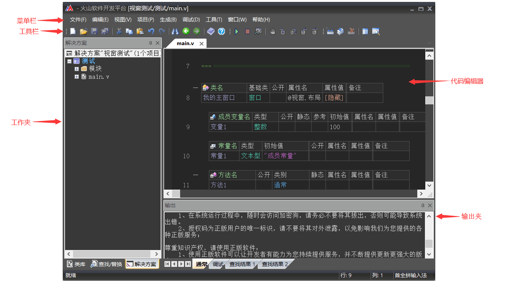
1.1 菜单栏
(1) 文件
用于提供项目文件的创建、打开、保存、关闭等相关操作。
(2) 编辑
用于操作代码编辑器复制、粘贴、撤销、书签、代码只读、代码注释等相关代码编辑操作。
(3) 视图
用于操作火山主窗口界面的部分功能栏是否显示。
(4) 生成
用于编译程序发布版。
(5) 调试
用于调试当前项目程序。
(6) 工具
用于提供火山系统设置、模块相关操作、目标开发平台相关小工具等。
(7) 窗口
用于操作已经打开的火山程序源文件。
(8) 帮助
提供火山系统帮助，提高程序开发效率。
1.2 工具栏
提供了常用功能的快捷操作图标，譬如：新建、保存、代码编辑相关操作、项目调试/发布、项目设置等。
图标的具体作用，可通过鼠标在图标上悬停，查看提示信息，如下图所示：
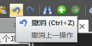
1.3 工作夹
在工作夹中又分三个子工作夹：
(1) 解决方案
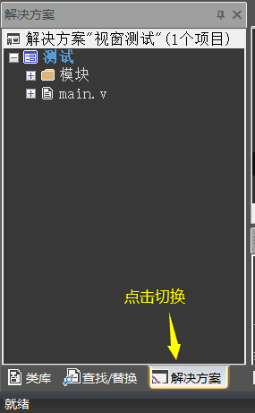
(2) 查找替换
用于提供项目代码查找、替换等功能，其结果将显示在输出夹中。
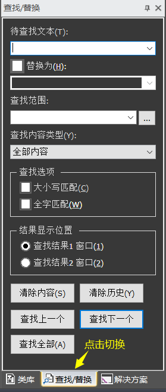
(3) 类库
类库夹中，第一个图标点击：用于查看火山系统类库模块和已安装的第三方类库。
第三个图标点击：用于刷新类库。
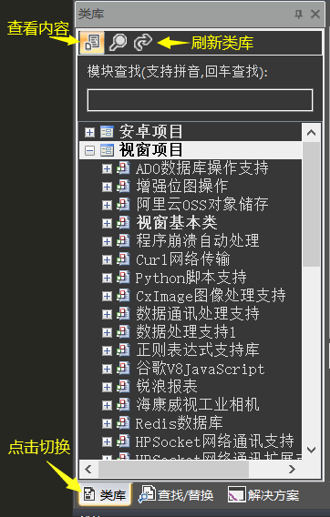
第二个图标点击：用于提供类库内容搜索功能，可以指定搜索视窗类库还是安卓类库。
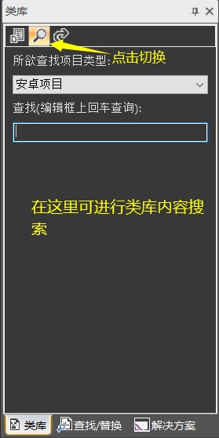
1.4 输出夹
用于显示火山软件的相关输出信息。
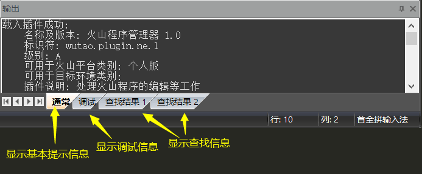
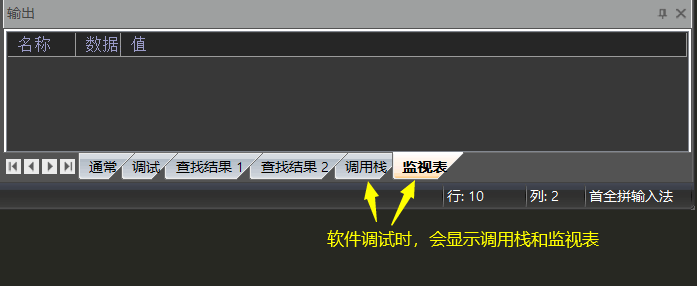
1.5 代码编辑器
用于编写程序代码，当需要编写同一文件不同位置的代码时，可进行拆分操作。
如下图所示：
代码编辑器的右上角可点击拖拽，拖拽后会将当前源码文件拆分成上下两部分，可用于编写不同位置的代码，提高代码编写效率。
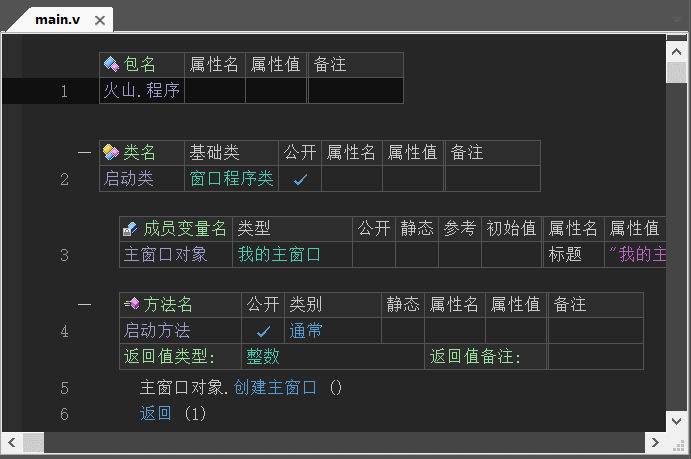
如果需要同时操作多个源码文件，也可以进行拆分。
如下图所示：
点击源码文件名可进行拖拽拆分。
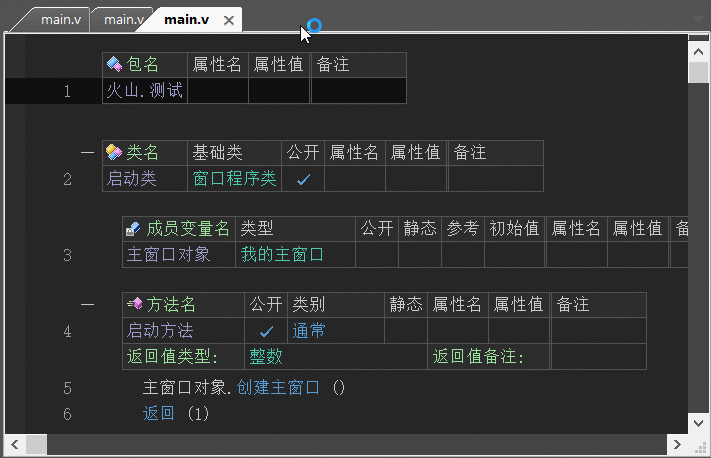
2、系统设置
提供火山平台系统设置操作。
通过“工具 -> 选项”菜单即可打开火山设置。
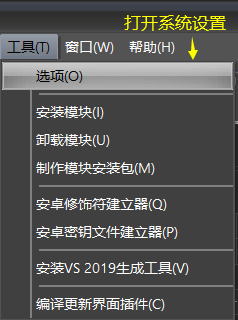
根据自己的需求进行相关设置操作即可，譬如：想要调整火山代码颜色，就去“火山程序管理器 -> 文档”中进行设置。
注：如果使用的是火山全平台，才会同时显示“安卓”和“视窗”的项目管理器设置。
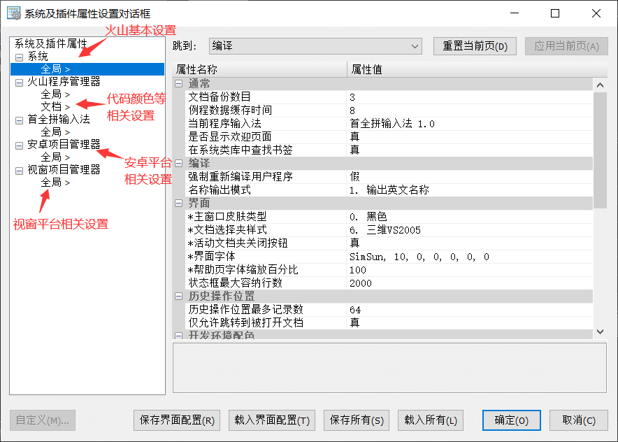
3、视窗设计器
在创建窗口程序项目后，就可以在窗口类的代码区域右键打开窗口设计器，或使用快捷键“Ctrl + U”。
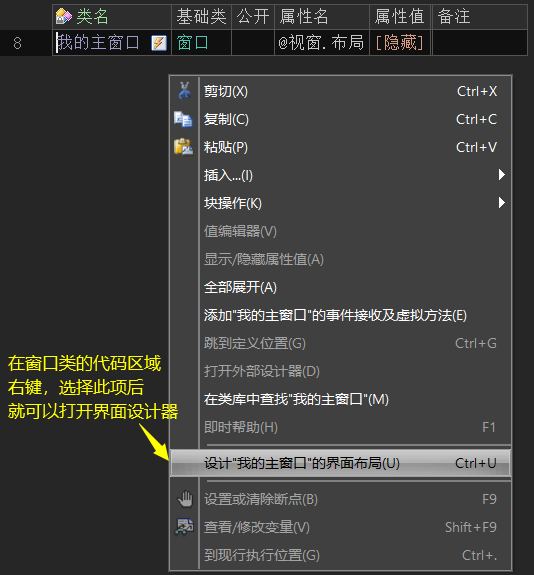
视窗界面设计器分为五个区域，如下所示：
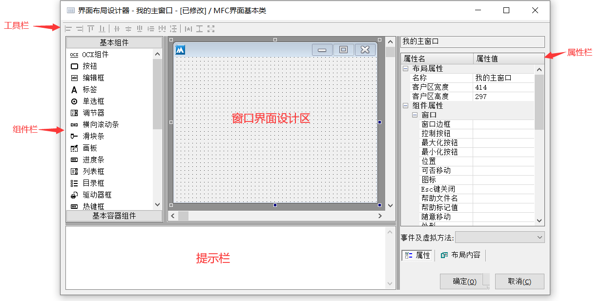
(1) 工具栏
用于调整组件布局样式，如下图所示，选中两个组件后可以批量对齐。
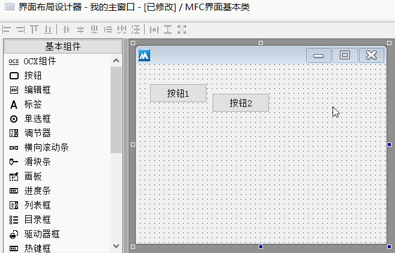
(2) 窗口界面设计区
进行界面设计相关工作，依赖组件栏和属性栏。
在火山视窗中的界面设计采用的是绝对布局模式，即精确指定某个组件在窗口中所处的位置和尺寸。
(3) 组件栏
选中指定组件后可以将其在“窗口界面设计区”进行界面设计，如下图所示：
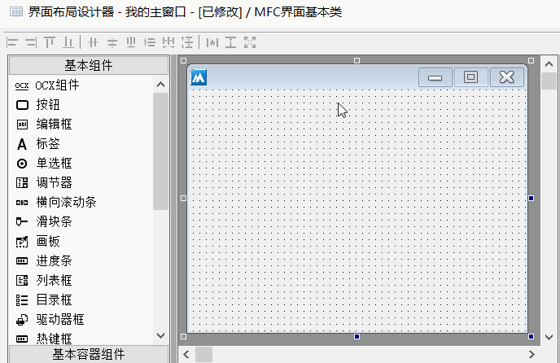
(4) 提示栏
用于显示提示信息，无论是选择组件还是选择组件的某个属性，都会在提示栏中进行相关提示。
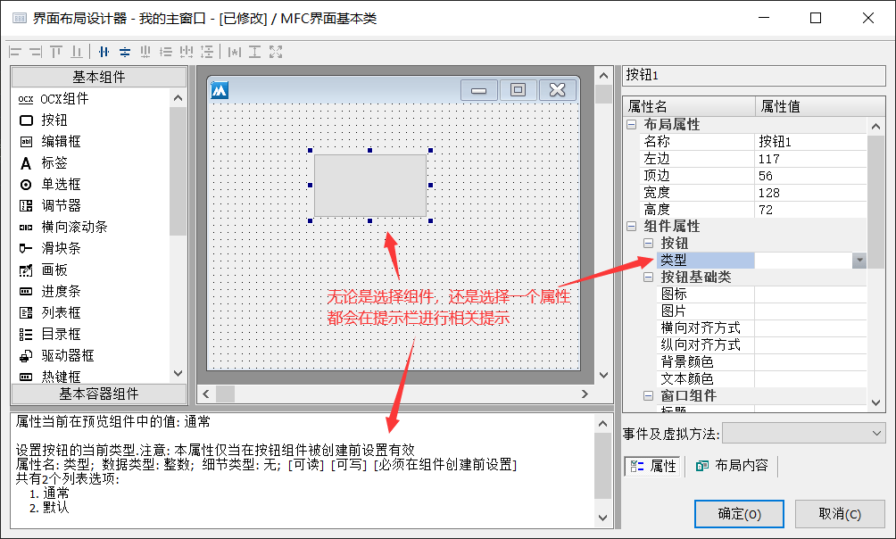
(5) 属性栏
用于设置组件常用属性，譬如：修改按钮标题。
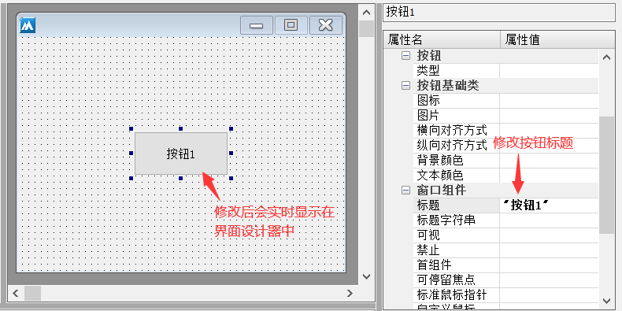
在属性栏中，点击“布局内容”可以查看组件布局结构，便于了解组件层次。
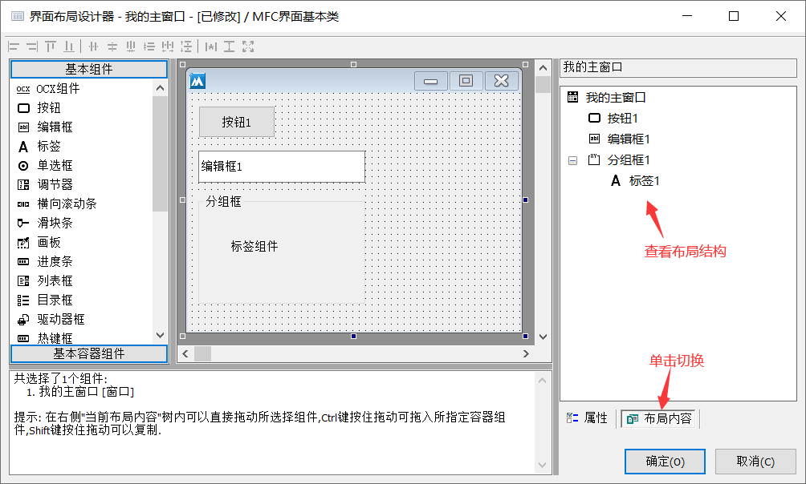
视窗软件中的组件焦点：
在视窗软件进行界面设计时，每个组件都可以获得焦点，按下Tab键也可以进行切换焦点。
如下以编辑框组件举例，按下tab键后光标可以在多个编辑框直接进行切换：
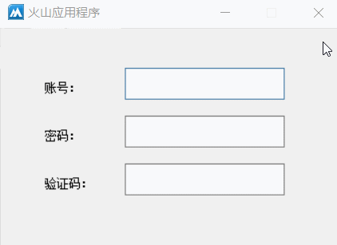
但是有时候会遇到这样的问题，组件切换焦点的顺序是错乱的，譬如：软件运行时输入焦点在账号编辑框中，但是按下tab键后，焦点转移到了验证码编辑框中，这显然是不正常的。
如下所示：
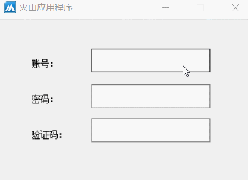
解决这个问题很简单，在布局内容中即可调整焦点顺序。
如下图所示，将密码编辑框和验证码编辑框对调位置，焦点切换即可恢复正常。
除此之外，如果软件运行时并不是账号编辑框获得输入焦点，也可以采取同样的办法，将账号编辑框调整到顶部位置即可。
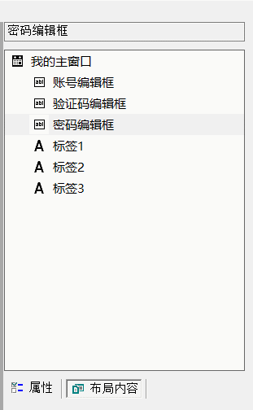
4、安卓设计器
安卓界面设计器打开方式同视窗设计器一致。
如下图所示：
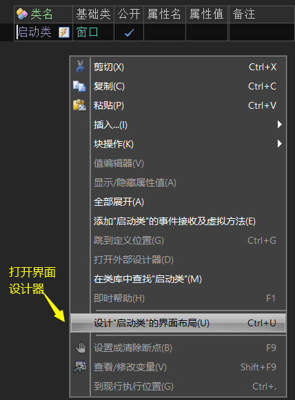
安卓界面设计器与视窗界面设计器基本一致，有以下几处不同：
(1) 没有布局工具栏，但有一个“布局预览尺寸”，用于调整设计器的预览尺寸。
注：预览尺寸仅仅提供预览，并不会影响软件最终运行尺寸。
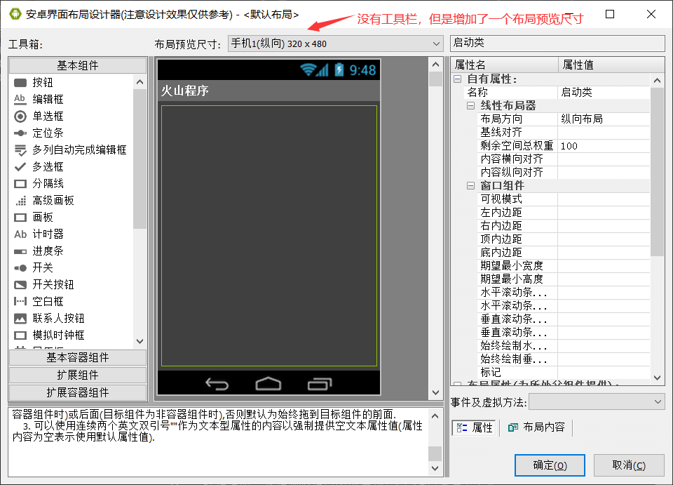
(2) 在“布局内容”中，增加了一个“布局栏”，用于对当前窗口设置多种布局。
譬如：在此可以复制并建立一个英文系统下的布局内容。具体可看“如何设计安卓界面布局”文章中“9. 已有布局列表框”。
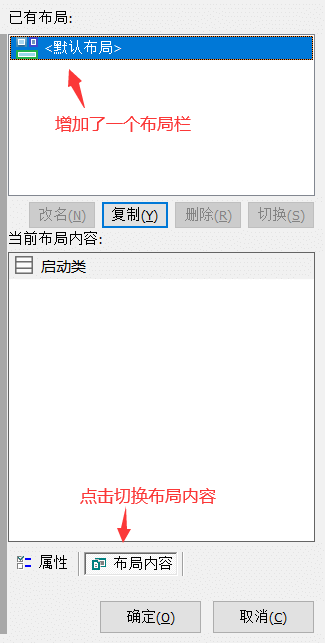
(3) 安卓采用的是相对布局模式：
火山视窗采用的是绝对布局模式(即精确指定某个组件在窗口中所处的位置和尺寸)，但这种方式在安卓系统下是行不通的，这是为什么呢？
道理很简单：Windows程序界面的显示设备只有一种：电脑屏幕，并且各种屏幕的DPI(每英寸像素数)和物理尺寸相差无几，而安卓程序界面的显示设备却是千千万万，其设备显示屏的DPI和物理尺寸可能相差很大，譬如电视机上可以运行安卓程序，手机上可以运行安卓程序，甚至只有很小屏幕的随声听/运动手环上也可以运行安卓程序，此时使用绝对布局方式将是一个噩梦，你根本无法设计出可以同时在各种安卓设备上正常显示的窗口界面。
由于以上原因，安卓程序采用的是相对布局方式，也就是说，某个组件的实际位置和尺寸是与其周边组件相关的。
注：虽然无法使用以前开发Windows程序所习惯的绝对布局方式会让您觉得有点麻烦，但是相对程序的环境可适应性及后续维护工作量，您最终会觉得这点麻烦是很值得的，而且您很快就能发现，相对布局方式也很容易学习。
具体可看“如何设计安卓界面布局”文章中的“4. 线性布局器”，学习如何进行安卓界面设计。
(4) 因设备环境不同，安卓设计器暂不支持实时界面预览，实际效果以安卓系统运行后的效果为准。
界面设计效果和最终运行效果，分别如下图所示：
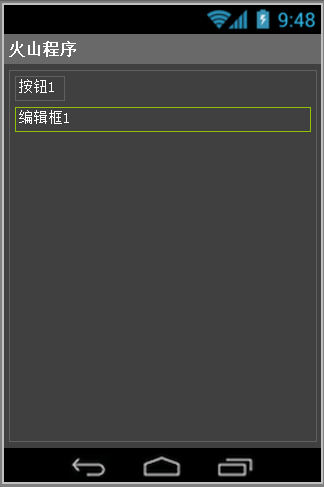
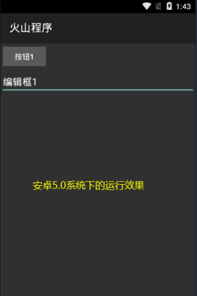
(5) 设计方式不同
在安卓设计器中，需要鼠标点击组件后（不松开鼠标左键），直接拖拽到设计器后再松开鼠标。
如下图所示：
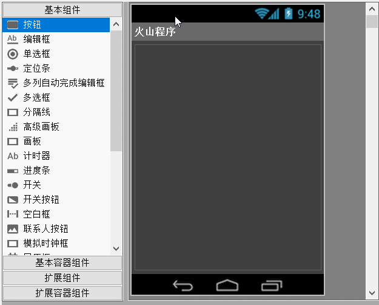